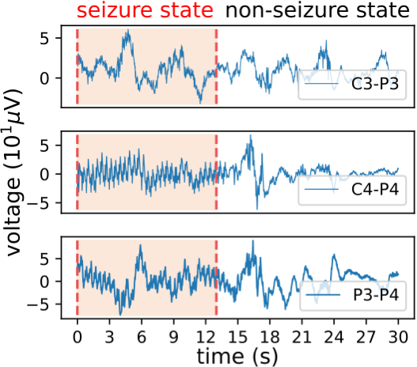
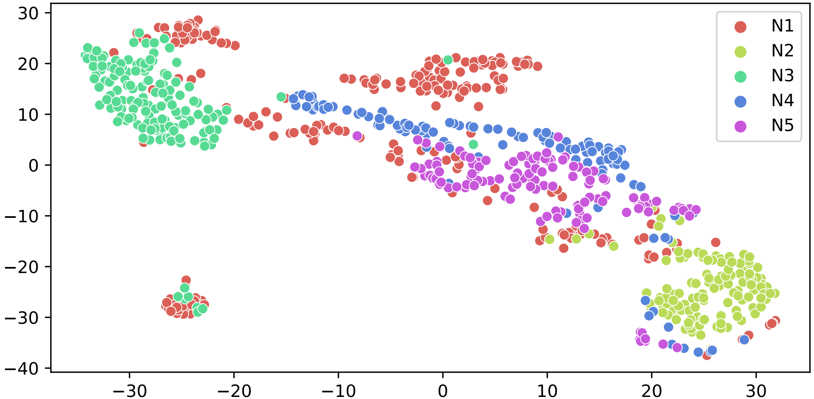
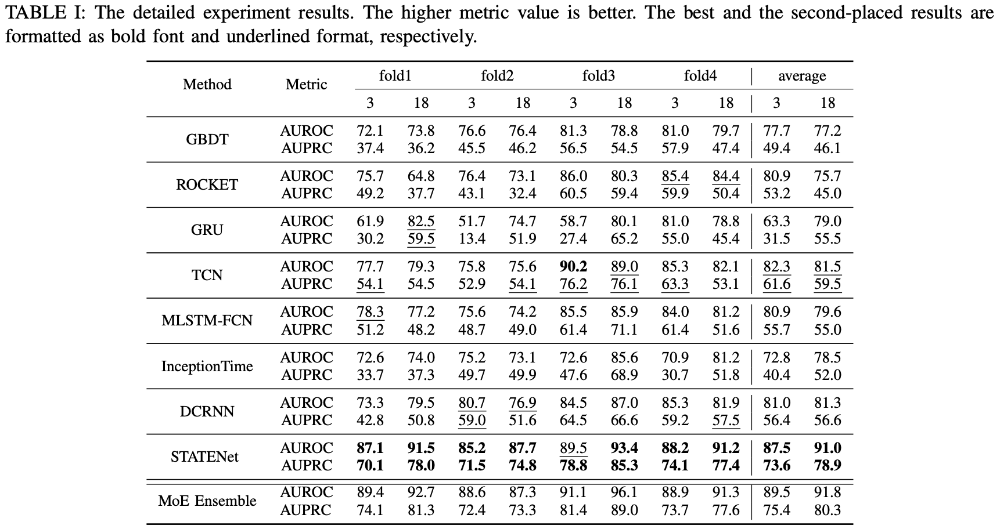

Protecting the Future: Neonatal Seizure Detection with Spatial-Temporal Modeling
Paper: TBD
Authors
- Ziyue Li (Microsoft Research Asia)
- Yuchen Fang (Shanghai Jiao Tong University)
- You Li (Central South University)
- Kan Ren (Microsoft Research Asia) kan.ren@microsoft.com
- Yansen Wang (Microsoft Research Asia)
- Xufang Luo (Microsoft Research Asia)
- Juanyong Duan (Microsoft)
- Congrui Huang (Microsoft)
- Dongsheng Li (Microsoft Research Asia)
- Lili Qiu (Microsoft Research Asia)
Abstract
A timely detection of seizures for newborn infants with electroencephalogram (EEG) has been a common yet life-saving practice in the Neonatal Intensive Care Unit (NICU). However, it requires great human efforts for real-time monitoring, which calls for automated solutions to neonatal seizure detection. Moreover, the current automated methods focusing on adult epilepsy monitoring often fail due to (i) dynamic seizure onset location in human brains; (ii) different montages on neonates and (iii) huge distribution shift among different subjects. In this paper, we propose a deep learning framework, namely STATENet, to address the exclusive challenges with exquisite designs at the temporal, spatial and model levels. The experiments over the real-world large-scale neonatal EEG dataset illustrate that our framework achieves significantly better seizure detection performance.
Challenges of Neonatal Seizure Detection
Here we describe the existed challenges in processing and modeling the EEG signal data for neonatal seizure detection, which also motivates our model design.
- Challenge 1: Epilepsy seizure events occur dynamically in different channels. When in the seizure state, the EEG waves illustrate typical disorder with high-frequency spike and wave discharges. However, the signals at different channels have shown different patterns or even do not illustrate seizure, which corresponds to different causes of epileptic seizure and their paroxysm location in the brain. The existing methods often overlook the fine-grained seizure pattern situation and takes the signals of all channels as a whole which may confound various patterns thus degenerate the detection performance. Thus, fine-grained EEG signal processing is required. 
- Challenge 2: The channel number is variant even limited on neonatal brain health monitoring. Since the head size of neonates is much smaller than adults, which results in the limited sensing electrodes limited in the real scenario. And the sensing devices in different centers can be quite different, which leads to variant channel information in the data. Several related works have also studied neonatal seizure detection with limited channels, e.g., only two channels. All the observations encourage researchers to conduct dynamic modeling techniques for dynamically modeling various even limited EEG signal channels for seizure detection.
- Challenge 3: Seizure patterns vary among neonates resulting in model generalization issue. The EEG dataset often contains the recordings from a cohort of people and a large variance of data distributions from different subjects have been observed, as shown in the following image.  From the figure, we can find that different clusters representing the EEG signal distributions of different neonates diverge in a large margin, which places obstacles for machine learning models to generalize from the training dataset to the test dataset which violates the independently identical distributional assumption of machine learning.
Method
We propose a deep learning framework, SpaTiAl-Temporal EEG Network (STATENet) to address the exclusive challenges with exquisite designs at the temporal, spatial and model levels.
Specifically, we incorporate a channel-level temporal modeling component for fine-grained brain signal processing, which is more flexible when tackling varying yet limited EEG channels on neonates. After the temporal modeling process, we leverage a spatial fusion module to comprehensively synthesize channel-level temporal patterns for detection. This process has been optimized through an end-to-end manner without explicitly signal preprocessing or human-crafted artifact removal.
Moreover, we propose a model-level ensemble by dynamically aggregating the outcomes of diverse spatial-temporal deep models to better generalize among different neonates.
Experiment Results
The experiment results of all cross-validation folds and the average performance on both 18-channel and 3-channel datasets are presented as follows:
 We have the following observations from the results.(1) Superiority of individual model: Our proposed STATENet achieves the best performance compared with other baseline models without ensemble on most folds of two datasets, which illustrates that the fine-grained channel-level temporal modeling and spatial fusion offer great capacity for EEG modeling.
(2) Advances of ensemble: Over a diverse set of trained models, the ensemble model further boosts the performances, which results from the better generalization ability brought by the ensemble learning process.
(3) Transferability: STATENet achieves a comparable performance on 3-channel datasets to that on 18-channel datasets, indicating that STATENet manage to adapt to limited channel scenario, thus more suitable for neonatal seizure detection. This observation is also consistent with clinical observations.
Extended Investigation
Transfer Across Montages. Our method can be easily transferred to EEG data with different channels withouti> retraining.
Occlusion Map Based Localization. Our method has good interpretability and can help for seizure localization, and the ability is also transferable across data with varying number of channels.
Model Suitability. We dynamically assign weights for predicting samples of different neonates, and our promising ensemble performance indicating that in this way we can achieve better cross-person generalization.
(Please refer to the paper for detailed analysis.)